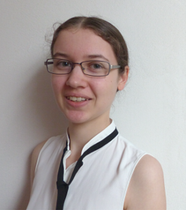

. . . . .
Tamara Hezel
Schon früh entdeckte Tamara die neuen Medien der Moderne. Neben Videospielen lernte sie sehr früh das Internet kennen und hielt sich dort gerne stundenlang auf. Neben einer Neigung zur Kreativität, entdeckte sie zufällig im Schulunterricht eine zweite Neigung fest. Das Programmieren fiel ihr durch eine methodische und analytische Vorgehens- und Denkweise einfacher als gedacht und öffnete somit ihren Plan etwas in dieser Richtung zu studieren.
Im Spätsommer 2019, nicht lange nachdem sie erfolgreich ihren Abiturabschluss in den Händen hielt, entschloss Tamara keine Zeit zu vergeuden. Denn ihr war schon früh klar: Das Studium später soll etwas mit Informatik zu tun haben, aber trotzdem praxisnah sein. Als sie dann schließlich den Bachelorstudiengang Medieninformatik an der Hochschule in Furtwangen entdeckte, wurde es klar. Dieser Studiengang muss es sein! Nicht nur wird dort Praxisnähe versprochen, sondern der Fokus steht auch auf dem was Tamara schon immer am meisten interessiert hatte: Medien! Egal ob Web, Film oder Videospiel; hier ist nicht nur Köpfchen gefragt, sondern auch Kreativität und Vorstellungskraft.
Seit Herbst 2019 studiert Tamara Hezel an der Hochschule in Furtwangen Medieninformatik mit dem Ziel in 2023 erflogreich ihr Bachelorstudium zu absolvieren. Nun will sie ihr schon erlangtes Wissen bei einem Praktikum in einem Unternehmen unter Beweis stellen und dabei so viel Erfahrung wie möglich sammeln um ihre Fähigkeiten noch weiter zu verbessern.
. . . . .